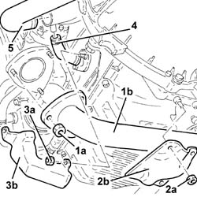
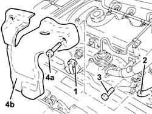
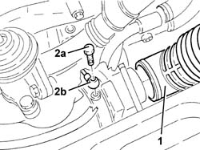
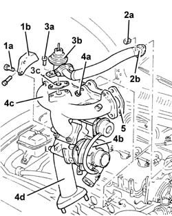
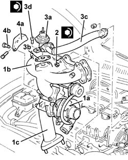

1064A19 TURBOCHARGER - EXHAUST MANIFOLD - EXHAUST PIPE CONNECTING HOSE - R.R.
- Path
- Procedures > 10 ENGINE > 1064 ENGINE TURBOCHARGING SYSTEM > 1064A turbo charger assembly > 1064A19 TURBOCHARGER - EXHAUST MANIFOLD - EXHAUST PIPE CONNECTING HOSE - R.R.
- Kind
- repair procedure (removal / refitting; the operation number is the code)
- Applies to
- engines: 1.9 JTD 8v ; all production periods
- Interactive page
- https://sloeber94.github.io/elrnDB-a156/en/#/3237827
Applies to: engines: 1.9 JTD 8v ; all production periods
 Removing
Removing
 Refitting
RefittingPosition the vehicle on the ramp.
Make sure that the ignition is OFF (STOP position), then disconnect the negative battery terminal (refer to op. 5530B10 battery - r+r ).
 | Name | Connector |
|---|---|---|
- | Battery |
Raise the vehicle.
1. Undo nuts (1a) fixing the exhaust pipe attachment to the engine/manifold (1b), to the exhaust manifold.
2. Undo nuts (2a) and remove reinforcement plate (2b).
3. Undo bolts (3a) and remove turbocharger oil outlet pipe protection (3b).
4. Disconnect the oil outlet pipe from the turbo.
5. Disconnect the air supply hose to the heat exchanger from the turbocharger.

Applies to: engines: 1.9 JTD 8v ; all production periods
Lower the vehicle.
1. Disconnect the coolant outlet pipe from the engine oil heat exchanger from the rigid inlet pipe to the coolant pump.
2. Diconnect the sleeve carrying coolant to the engine oil heat exchanger from the rigid pipe.
3. Unscrew the bolt securing the rigid pipe carrying fluid to the engine oil heat exchanger.
4. Undo bolts (4a) and remove exhaust manifold heat shield (4b).

Applies to: engines: 1.9 JTD 8v ; all production periods
1. Disconnect the air intake sleeve from the turbocharger.
2. Undo connector (2a) and disconnect the oil supply pipe to the turbocharger (2b).

Applies to: engines: 1.9 JTD 8v ; all production periods
1. Undo bolts (1a) and remove bracket (1b) connecting the turbocharger to the crankcase.
2. Undo nuts (2a) and disconnect exhaust gas recirculation pipe (2b) from the air chamber.
Remove the gasket.
3. Undo bolts (3a) and remove E.G.R. valve (3b) complete with gasket (3c) and exhaust gas recirculation pipe.
4. Undo nuts (4a) and remove turbocharger (4b) complete with exhaust manifold (4c) and sleeve connected to exhaust pipe (4d).
5. Remove the seal.

Applies to: engines: 1.9 JTD 8v ; all production periods
Refitting
Removing1. Fit turbocharger (1a) with exhaust manifold (1b) and sleeve connected to exhaust pipe (1c).
2. Tighten the nuts securing the exhaust manifold to the cylinder head to the recommended torque.
 | Fastening | Component | Ø | Value (daNm) |
|---|---|---|---|---|
2 | Nut | EXHAUST MANIFOLD/S | M8 | 2.1 - 2.6 |
3. Fit E.G.R. valve (3a) together with gasket (3b) and exhaust gas recirculation pipe (3c). Then secure by tightening bolts (3d) to the specified torque.
| Fastening | Component | Ø | Value (daNm) |
|---|---|---|---|---|
3d | Bolt | EGR VALVE | M8 | Exhaust manifold side 2.1 - 2.6 |
Connect the exhaust gas recirculation pipe to the intake chamber and secure using the nuts.
4. Fit bracket (4a) connecting the turbocharger to the crankcase and and secure it using bolts (4b).

Applies to: engines: 1.9 JTD 8v ; all production periods
Connect the oil supply pipe to the turbocharger and secure by tightening the connector to the recommended torque.
| Fastening | Component | Ø | Value (daNm) |
|---|---|---|---|---|
- | Connector | OIL DELIVERY PIPE TO TURBO | M12 | 1.3 - 1.6 |
Connect the air intake sleeve to the turbocharger.
Fit the exhaust manifold heat shield and fix it using the bolts.
Secure the rigid pipe carrying coolant to the engine oil heat exchanger using the bolt.
Connect the sleeve carrying coolant to the engine oil heat exchanger to the rigid pipe.
Connect the coolant outlet pipe from the engine oil heat exchanger to the rigid inlet pipe to the coolant pump.
Raise the vehicle.
Connect the heat exchanger air supply hose to the turbocharger.
Connect the air outlet hose to the turbocharger.
Fit the reinforcement plate and fix it using the nuts.
Tighten the nuts fixing the exhaust pipe attachment to the engine/manifold to the exhaust manifold to the recommended torque.
| Fastening | Component | Ø | Value (daNm) |
|---|---|---|---|---|
- | Nut | EXHAUST PIPE TO ENGINE | M8 | (Engine side) 2.0 - 2.5 |
Lower the vehicle.
Connect the battery terminal (-).
Top up the engine cooling system with the recommended fluid.
 | Type | Component | Name | Qty. |
|---|---|---|---|---|
- | Fluid | ORDINARY PREPARATION | Alfa Romeo Climafluid Super Permanent -40°C | 6.1 |
Remove the car from the ramp.